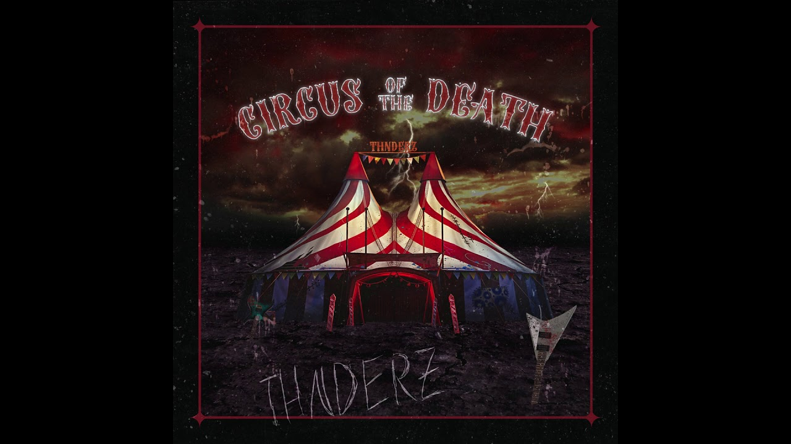

THNDERZ es un dj y productor de 23 años de Treviso, Italia. Después de algunos años de arduo trabajo, decidió crear su estilo único: una combinación de hardstyle y psy con sus habilidades con la guitarra. El 2019 fue un gran año
para él, ya que en enero lanzó una gran mezcla para Timmy Trumpet la cual recibió el apoyo en vivo del tambien Dj Uberjakd y muchos artistas. Tocó el famoso coro de Freaks con una guitarra de rock.
Ahora les presentamos su ultimo sencillo: Circus Of The Death, el cual es poderoso y ritmico.
Escucha la cancion disco dando un clic a la portada de abajo.
